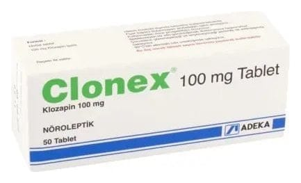

Clonex 100 mg Tablet, 50 Adet

Ne için kullanılır
KT · Bölüm 1CLONEX tabletler etkin madde olarak klozapin içerir. CLONEX, antipsikotikler olarak
adlandırılan bir ilaç grubuna dahildir. CLONEX tabletler, yuvarlak, sarı renkli, bir yüzü çentikli ve diğer yüzünde “CPN 100” yazılı, eşit yarımlara bölünebilir tabletlerdir ve 50 adet tablet içeren blister ambalajlarda sunulmaktadır.
CLONEX diğer antipsikotik ilaçları denemiş ve bu ilaçlardan yeterince fayda sağlayamamış ya da yan etkileri nedeniyle diğer antipsikotik ilaçları tolere edemeyen şizofreni hastalarının tedavisinde kullanılır. CLONEX ayrıca, aksi takdirde intihar girişiminde bulunabilecek şizofreni ya da şizoafektif bozukluk (duygu-durum bozukluklarının gözlendiği şizofreni) gözlenen hastaların tedavisinde de kullanılır. Şizofreni düşünce, duygu ve davranış bozuklukların gözlendiği ruhsal bir bozukluktur. Ayrıca, CLONEX standart tedavi başarısız olduğunda Parkinson hastalarındaki düşünce, duygu ve davranış bozukluklarının tedavisinde de kullanılır. Parkinson hastalığı kronik (kalıcı) bir beyin hastal ığıdır. Bu hastalık başlıca, beynin vücudun değişik bölümlerindeki kasların hareketlerini koordine etme şeklini etkiler. CLONEX yalnızca doktor reçetesi ile kullanılabilir.